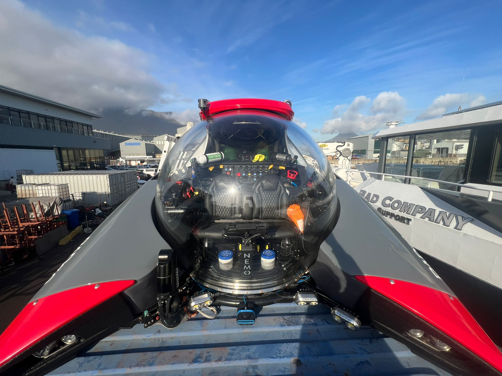

Less storage space
than two jet-skis.
The NEMO rewrote what private submarine ownership requires. At 2,500 kg and 1.55 m tall, it goes where no submersible could go before.
At the heart of the NEMO is a state-of-the-art acrylic pressure hull — a completely transparent sphere that hides nothing from view. The surrounding structure was designed around that single idea: an unobstructed window into the ocean, with none of the ballast tanks, batteries or framework that clutter the view from a conventional submersible.
Four silent electric thrusters let the NEMO hover beside an object of interest or hold station against a current while descending. Two intelligent control systems govern it. The MANTA controller offers pinpoint manoeuvring and hands steering to the passenger under pilot supervision. The MARLIN is a wireless surface remote — it can move the submarine away from the support vessel with nobody aboard, or hold it in position over a dive site during passenger transfer.
Because of its weight and single lifting point, the NEMO can be set down on any flat surface without a cradle or davit. It deploys from a yacht, a boat ramp, a beach launcher, or a towable trailer — which makes ownership realistic for people who do not own a superyacht.
“The NEMO is the only series-produced submarine in the world.”
U-Boat WorxThe design earned a Red Dot Award, and was singled out as Best of the Best in Mobility and Transportation — the programme's highest distinction.
